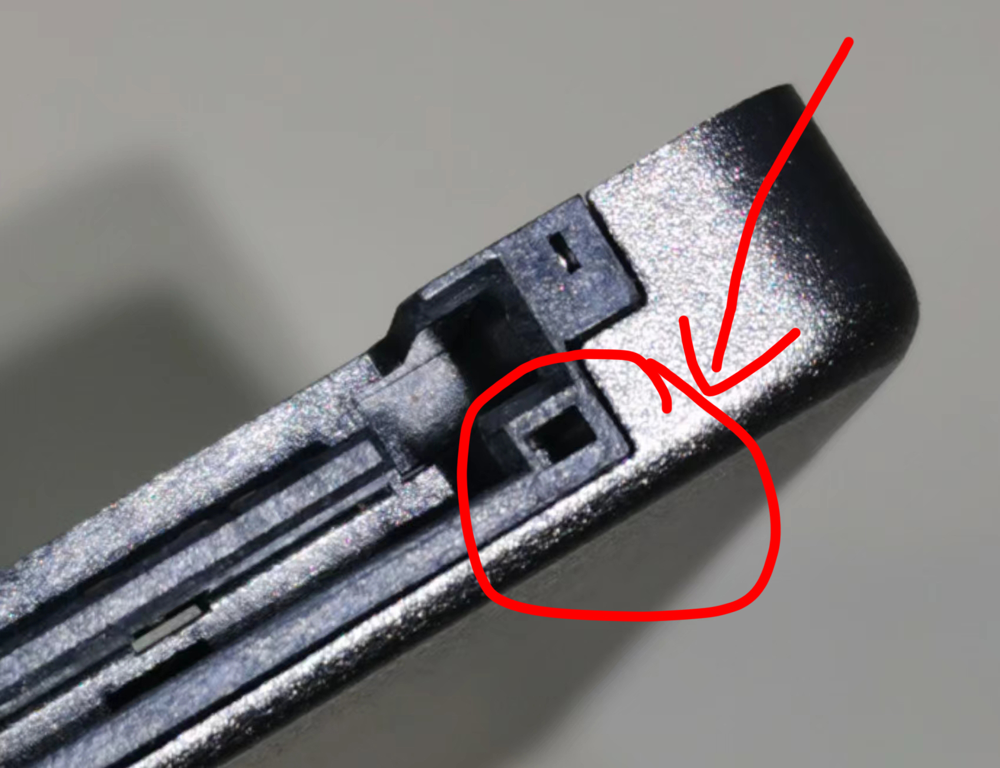
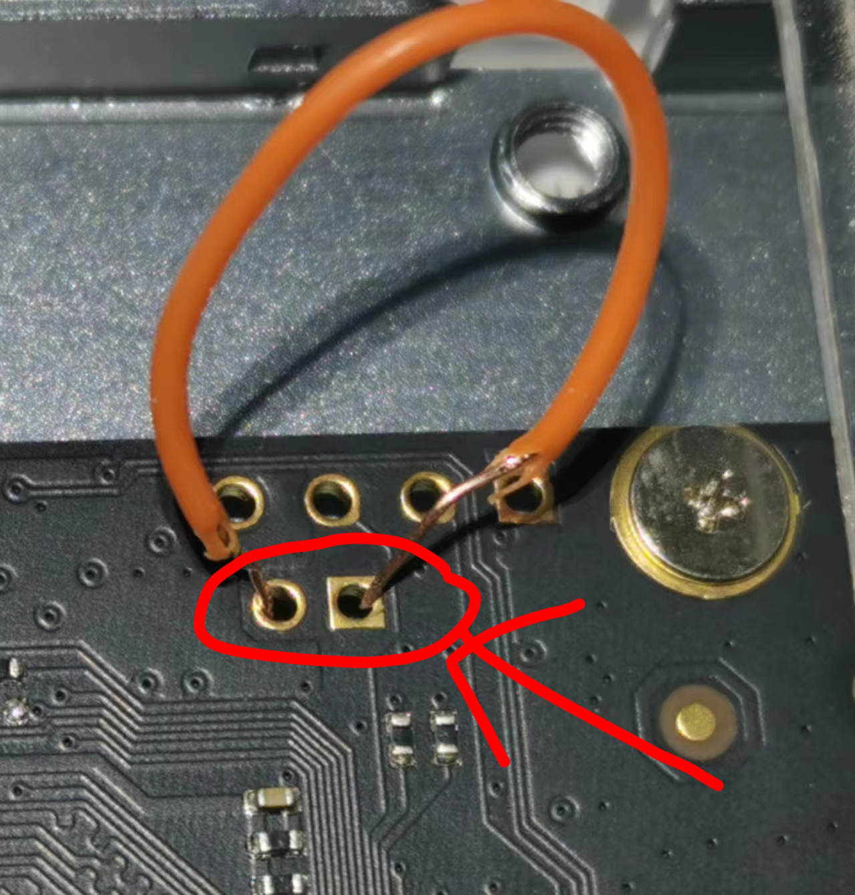
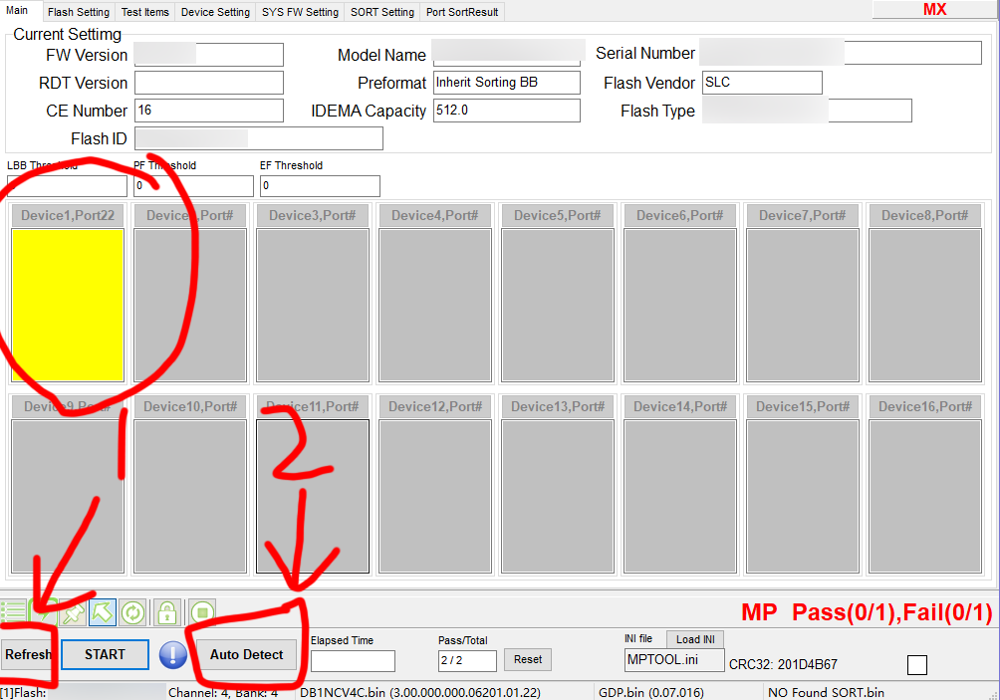
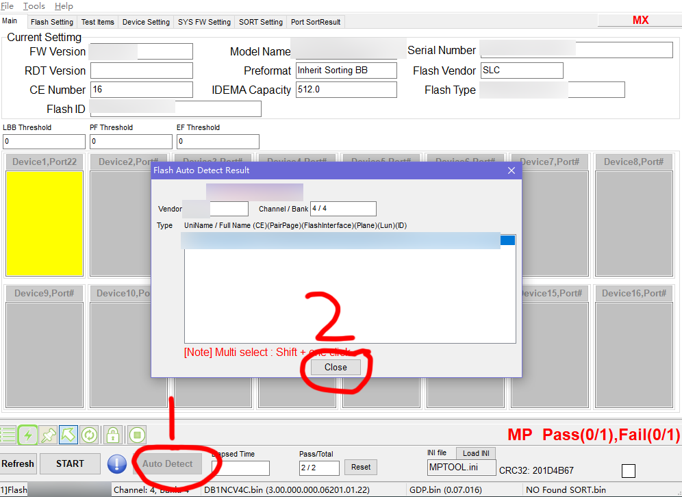
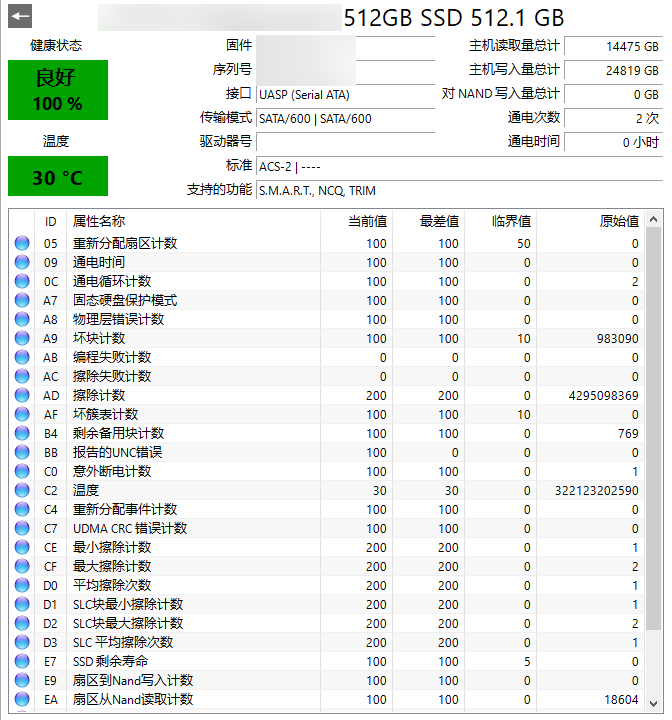
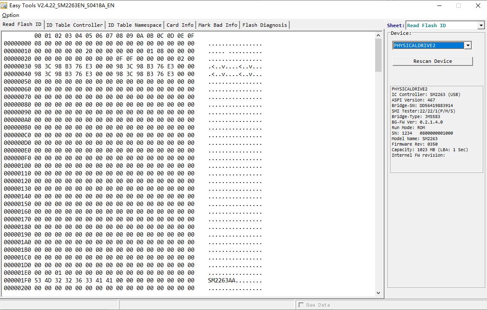
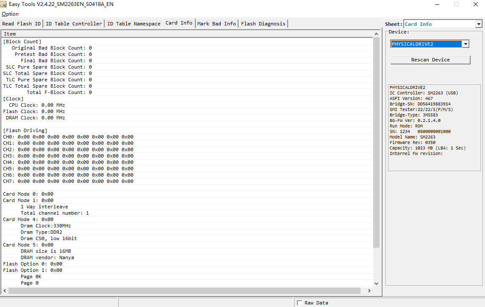

Some Useful Links
xfjportal share MPTOOL – Smi AU IS Phision … controller https://xfjportal.com/
SSD utils (30.03.2025) http://vlo.name:3000/ssdtool/
https://flashinfo.top/FlashInfo
https://flash.microce.com.cn:8888/
SM2320G开卡工具 - EVA存储 https://www.evassd.cn/sm2320g%e5%bc%80%e5%8d%a1%e5%b7%a5%e5%85%b7/
http://tisensen.cn/index.php/archives/37/
固态开卡工具下载站 http://xmrom.kmdns.net:5000/
毛子镜像站 http://usbdev.diyflash.top/
匿名分享站 http://file.diyflash.top/
FlashID
品牌选择：
89 //INTEL
2C //MICRON
98 //TOSHIBA
45 //SANDISK
AD //HYNIX
EC //SAMSUNG
9B //YMTC
SpecTek
https://www.spectek.com/menus/mark_code.aspx
https://www.mydigit.cn/thread-182785-1-1.html
原话： Grade and Product Definition -AS = Full Spec for SSD (100%) -AL = Full Spec for USB/SD and low end SSD (100%) -AF = Full Spec for low end USB/SD (100%) -AR = Relaxed Spec (see Functional Density) -MB = Mixed Bins (35%) -ES = Engineering Sample -UT = Untested parts -S5 = Partially tested, est yield of 50% (EOL 4/15/19) -S7 = Partially tested, est yield of 75% -S8 = Partially tested, est yield of 85% (EOL 4/15/19) -S9 = Partially tested, est yield of 90% -SG = Simple Test Passers/Extended Test Failures (EOL 4/15/19) -SS = Simple Test Failures (EOL 4/15/19)
翻译过的： 等级和产品定义-AS = SSD的完整规格（100％） -AL = USB / SD和低端SSD的完整规格（100％） -AF =低端USB / SD的完整规格（100％） -AR = 松弛规格（请参见功能密度） -MB =混合料桶（35％） -ES =工程样品-UT =未经测试的零件 -S5 =部分测试，最理想的合格率为50％（EOL 4/15/19） -S7 =部分测试 ，最理想的合格率为75％ -S8 =部分测试，最理想的合格率为85％（EOL 4/15/19） -S9 =唯一性测试，最理想的合格率为90％ -SG =简单测试合格者/扩展测试失败（EOL 4 / 15/19） -SS =简单测试失败（EOL 4/15/19）
固态主控参数汇总
http://tisensen.cn/index.php/archives/37/
美满电子Marvell主控资料
| 型号 | 等级 | 制程 | 接口 | 最大通道 | CE通道 | 最大速率 | 缓存 | 最大容量 |
|---|---|---|---|---|---|---|---|---|
| 88SS8014 | 消费/企业 | TSMC 90nm | SATA2 | 8 | 4 | 100MT/s | DRAM | 256GB |
| 88SS9174 | 消费/企业 | TSMC 65nm | SATA3 | 8 | 4 | 133MT/s | DRAM | 1TB |
| 88SS9175 | 消费 | TSMC 65nm | SATA3 | 4 | 4 | 133MT/s | DRAM | 512GB |
| 88SS9187 | 消费/企业 | TSMC 55nm | SATA3 | 8 | 4 | 200MT/s | DRAM | 2TB |
| 88SS9188 | 消费 | TSMC 55nm | SATA3 | 4 | 4 | 200MT/s | DRAM | 1TB |
| 88SS9189 | 消费/企业 | TSMC 55nm | SATA3 | 8 | 4 | 200MT/s | DRAM | 2TB |
| 88SS9190 | 消费 | TSMC 55nm | SATA3 | 4 | 4 | 200MT/s | DRAM | 1TB |
| 88SS9192 | 企业(Sandisk) | - | SATA3 | 8 | 4 | 200MT/s | DRAM | 2TB |
| 88SS1074 | 消费/企业 | TSMC 28nm | SATA3 | 4 | 8 | 400MT/s | DRAM | 8TB |
| 88SS1079 | 消费 | TSMC 28nm | SATA3 | 4 | 8 | - | DRAM | 8TB |
| 88SS1080 | 消费/企业 | TSMC 28nm | SATA3 | 4 | 8 | - | DRAM | 8TB |
| 88NV1120 | 消费 | TSMC 28nm | SATA3 | 2 | 4 | 400MT/s | X | 1TB |
| 88SS9032 | 企业(Toshiba) | - | SAS2 | 8 | - | - | DRAM | 512GB |
| 88SS9036 | 企业(Toshiba) | - | SAS2 | 8 | - | - | DRAM | 512GB |
| 88i1066 | 企业(Seagate) | - | SAS3 | 8 | - | - | DRAM | 1TB |
| 88SS9185 | 企业(SMART) | TSMC 55nm | SAS2 | 8 | - | - | DRAM | 4TB |
| 88SS1085 | 企业(Sandisk) | TSMC 28nm | SAS3 | 8 | - | - | DRAM | 8TB |
| 88NV8120 | 消费 | - | PCIe | - | - | - | DRAM | - |
| 88NV9145 | 企业 | TSMC 65nm | PCIe Gen2x1 (AHCI) | 4 | 4 | 200MT/s | DRAM | 128GB |
| 88SS9183 | 消费 | TSMC 55nm | PCIe Gen2x2 (AHCI) | 8 | 4 | 400MT/s | DRAM | 512GB |
| 88SS9293 | 消费/企业 | TSMC 40nm | PCIe Gen2x4 (AHCI) | 8 | 4 | 400MT/s | DRAM | 1TB |
| 88SS1083 | 消费 | TSMC 28nm | PCIe Gen2x2 (AHCI)SATA | 8 | - | 400MT/s | DRAM | - |
| 88SS1090 | 消费 | TSMC 28nm | PCIe Gen3x4 (NVMe 1.1) | 2 | - | - | - | - |
| 88SS1093 | 消费/企业 | TSMC 28nm | PCIe Gen3x4 (NVMe 1.2) | 8 | 8 | 533MT/s | DRAM | 4TB |
| 88SS1095 | 消费/企业 | TSMC 28nm | PCIe Gen3x4 (NVMe 1.2) | 4 | 8 | 533MT/s | DRAM | 2TB |
| 88SS1092 | 消费/企业 | TSMC 28nm | PCIe Gen3x4 (NVMe 1.3) | 8 | 8 | 533MT/s | DRAM | 8TB |
| 88NV1140 | 消费 | TSMC 28nm | PCIe Gen3x1 (NVMe 1.3) | 2 | 4 | 400MT/s | HMB | 1TB |
| 88NV1160 | 消费 | TSMC 28nm | PCIe Gen3x2 (NVMe 1.3) | 4 | 4 | 533MT/s | HMB | 1TB |
| 88SS1032 TC58NC1032GTC | 企业(Toshiba) | - | PCIe Gen3x4 (NVMe 1.0) SAS3 | - | - | - | DRAM | 4TB |
| 88SS1033 TC58NC1033GTC | 企业(Toshiba) | - | PPCIe Gen3x4 PCIe Gen2x2 (NVMe 1.3) SAS3 | 16 | - | - | DRAM | 32TB |
| 88SS1087 | 企业(Sandisk) | TSMC 28nm | PCIe Gen3x4 (NVMe 1.2) | - | - | - | DRAM | 4TB |
| 88SS1098 | 企业 | TSMC 28nm | PCIe Gen3x4 PCIe Gen2x2 (NVMe 1.3) | 8 | 8 | 800MT/s | DRAM | 8TB |
| 88SS1088 | 企业 | TSMC 28nm | PCIe Gen3x4 PCIe Gen2x2 (NVMe 1.3) | 16 | 8 | 800MT/s | DRAM | 16TB |
| 88SS1100 | 消费 | TSMC 28nm | PCIe Gen3x4 (NVMe1.3) | 8 | 8 | 800MT/s | DRAM | 4TB |
| 88SS1084 | 消费 | TSMC 28nm | PCIe Gen3x4 (NVMe1.3) | 4 | 8 | 800MT/s | DRAM | 4TB |
| 88SS1321 | 消费/企业 | TSMC 12nm | PCIe Gen4x4 (NVMe1.4) | 4 | 8 | 1200MT/s | DRAM | 8TB |
| 88SS1322 | 消费/企业 | TSMC 12nm | PCIe Gen4x4 (NVMe1.4) | 4 | 4 | 1200MT/s | HMB | 4TB |
| 88SS1323 | 消费/企业 | TSMC 12nm | PCIe Gen4x2 (NVMe1.4) | 4 | 4 | 1200MT/s | HMB | 4TB |
| 88SS1132 TC58NC1132GTC | 企业(Toshiba) | TSMC 16nm | PCIe Gen4x4 PCIe Gen2x2 (NVMe1.4) SAS4 | 16 | - | 800MT/s | DRAM | 32TB |
| 88SS1137 | 企业 | TSMC 16nm | PCIe Gen5x4 PCIe Gen2x2 (NVMe2.0) | 16 | - | - | DRAM | 32TB |
| MV-SS1331 | 企业 | TSMC 12nm | PCIe Gen5x4 PCIe Gen2x2 (NVMe2.0) | 8 | 8 | 1600MT/s | DRAM | - |
| MV-SS1333 | 企业 | TSMC 12nm | PCIe Gen5x4 PCIe Gen2x2 (NVMe2.0) | 16 | 8 | 1600MT/s | DRAM | - |
群联电子Phison主控资料
| 型号 | 等级 | 制程 | 接口 | 最大通道 | CE通道 | 最大速率 | 缓存 | 最大容量 |
|---|---|---|---|---|---|---|---|---|
| S2-PS3102 | 消费 | 160nm | SATA2 | 4 | 4 | - | X | - |
| S3-PS3016-S3 | 消费 | 90nm | SATA2 | 8 | - | - | DRAM | - |
| S5-PS3105-S5-I | 消费 | 90nm | SATA2 | 8 | 8 | - | DRAM | 512GB |
| S7-PS3107-S7-D PS3107-S7-J | 消费 | 90nm | SATA2 | 4 | 4 | - | DRAM/X | 256GB |
| S8-PS3108-S8-I | 消费 | UMC 55nm | SATA3 | 8 | 8 | - | DRAM | 1TB |
| S9-PS3109-S9-J PS3109-S9-W | 消费 | UMC 55nm | SATA3 | 4 | 4 | - | DRAM/X | 256GB |
| S10-PS3110-S10-X CB | 消费 | UMC 55nm | SATA3 | 8 | 4 | - | DRAM | 2TB |
| S10DC-PS3110-S10-X DC | 企业 | UMC 55nm | SATA3 | 8 | 4 | - | DRAM | 2TB |
| S10C-PS3110-S10C-12 | 消费 | UMC 55nm | SATA3 | 4 | 4 | - | DRAM | 1TB |
| S11T-PS3111-S11-13 | 消费 | UMC 40nm | SATA3 | 2 | 8 | 533MT/s | X | 1TB |
| S12-PS3112-S12-27 | 消费 | TSMC 28nm | SATA3 | 8 | 8 | 667MT/s | DRAM | 16TB |
| S12DI-PS3112-S12DI-27 | 工业 | TSMC 28nm | SATA3 | 8 | 8 | 667MT/s | DRAM | 16TB |
| S12DC-PS3112-S12DC-27 | 企业 | TSMC 28nm | SATA3 | 8 | 8 | 667MT/s | DRAM | 16TB |
| S13T-PS3113-S13-31 | 消费 | TSMC 28nm | SATA3 | - | - | - | X | 2TB |
| S17T-PS3117-S17 PS3117-S17-13 | 消费 | UMC 28nm | SATA3 | 2 | 8 | 1400MT/s | X | 4TB |
| S17TI-PS3117-S17TI-13 | 工业 | UMC 28nm | SATA3 | 2 | 8 | 1400MT/s | X | 2TB |
| E7-PS5007-11 | 消费 | TSMC 28nm | PCIe Gen3x4 (NVMe1.2) | 8 | 8 | - | DRAM | 4TB |
| E7DC-PS5007-E7DC | 企业 | TSMC 28nm | PCIe Gen3x4 (NVMe1.2) | 8 | 8 | - | DRAM | 2TB |
| E8-PS5008-E8-10 | 消费 | UMC 40nm | PCIe Gen3x2 (NVMe1.2) | 4 | 8 | - | DRAM | 2TB |
| E8T-PS5008-E8-10 | 消费 | UMC 40nm | PCIe Gen3x2 (NVMe1.3) | 4 | 8 | - | HMB | 1TB |
| E12-PS5012-E12-27 | 消费 | TSMC 28nm | PCIe Gen3x4 (NVMe1.3) | 8 | 4 | 667MT/s | DRAM | 8TB |
| E12DI-PS5012-E12DI-27 | 工业 | TSMC 28nm | PCIe Gen3x4 (NVMe1.3) | 8 | 4 | 667MT/s | DRAM | 8TB |
| E12DC-PS5012-E12DC-27 | 企业 | TSMC 28nm | PCIe Gen3x4 (NVMe1.3) | 8 | 4 | 667MT/s | DRAM | 4TB |
| E12C-PS5012-E12C-10 | 消费 | TSMC 28nm | PCIe Gen3x4 (NVMe1.3) | 4 | 4 | 667MT/s | DRAM | 2TB |
| E12S-PS5012-E12S-32 | 消费 | TSMC 28nm | PCIe Gen3x4 (NVMe1.3) | 8 | 4 | 667MT/s | DRAM | 8TB |
| E13T-PS5013-E13-31 PS5013-E13-35 | 消费 | TSMC 28nm | PCIe Gen3x4 (NVMe1.3) | 4 | 4 | 800MT/s | HMB | 2TB |
| E13TI-PS5013-E13TI-31 | 工业 | TSMC 28nm | PCIe Gen3x4 (NVMe1.3) | 4 | 4 | 800MT/s | HMB | 2TB |
| E15T-PS5015-E15-35 | 消费 | TSMC 28nm | PCIe Gen3x4 (NVMe1.4) | 4 | 4 | 1200MT/s | HMB | 2TB |
| FX-PS5901-37 | 企业 | TSMC 28nm | PCIe Gen3x4 (NVMe1.3) | 12 | - | - | DRAM | 4TB |
| E16-PS5016-E16-32 | 消费 | TSMC 28nm | PCIe Gen4x4 (NVMe1.3) | 8 | 4 | 800MT/s | DRAM | 8TB |
| E18-PS5018-E18-41 | 消费 | TSMC 12nm | PCIe Gen4x4 (NVMe1.4) | 8 | 4 | 1600MT/s | DRAM | 8TB |
| E18DI-PS5018-E18DI-41 | 工业 | TSMC 12nm | PCIe Gen4x4 (NVMe1.4) | 8 | 4 | 1600MT/s | DRAM | 4TB |
| E18DC-PS5018-E18DC-41 | 企业 | TSMC 12nm | PCIe Gen4x4 (NVMe1.4) | 8 | 4 | 1600MT/s | DRAM | 4TB |
| E19T-PS5019-E19-35 | 消费 | TSMC 28nm | PCIe Gen4x4 (NVMe1.4) | 4 | 4 | 1600MT/s | HMB | 2TB |
| E20-PS5020BB | 企业 | TSMC 12nm | PCIe Gen4x4 2x2(NVMe1.4) | 16 | - | - | DRAM | 32TB |
| E21T-PS5021-E21-48 | 消费 | TSMC 12nm | PCIe Gen4x4 (NVMe1.4) | 4 | 4 | 1600MT/s | HMB | 4TB |
| E21TI-PS5021-E21TI-48 | 消费 | TSMC 12nm | PCIe Gen4x4 (NVMe1.4) | 4 | 4 | 1600MT/s | HMB | 2TB |
| E22T-PS5022-E22 | 车辆 | TSMC 12nm | PCIe Gen4x4 2x2(NVMe2.0) | 4 | 4 | 2400MT/s | HMB | - |
| E25-PS5025-E25-53 | 消费 | TSMC 12nm | PCIe Gen4x4 (NVMe2.0) | 4 | 4 | 2400MT/s | DRAM | 4TB |
| E26-PS5026-E26-52 | 消费 | TSMC 12nm | PCIe Gen5x4 (NVMe2.0) | 8 | 4 | 2400MT/s | DRAM | 32TB |
| E26DC-PS5026-E26DC-52 | 企业 | TSMC 12nm | PCIe Gen5x4 (NVMe2.0) | 8 | 4 | 2400MT/s | DRAM | 8TB |
| E27T-PS5027-E27-61 | 消费 | TSMC 12nm | PCIe Gen4x4 (NVMe2.0) | 4 | 4 | 3600MT/s | HMB | 8TB |
| E31T-PS5031-E31 | 消费 | TSMC 7nm | PCIe Gen5x4 (NVMe2.0) | 4 | 4 | 3600MT/s | HMB | 8TB |
慧荣科技SiliconMotion主控资料
| 型号 | 等级 | 制程 | 接口 | 最大通道 | CE通道 | 最大速率 | 缓存 | 最大容量 |
|---|---|---|---|---|---|---|---|---|
| SM2240 | 消费 | - | SATA2 | 4 | 16 | - | X | - |
| SM2242 | 消费 | - | SATA2 | 4 | 8 | - | X | - |
| SM2244 | 消费 | 130nm | SATA2 | 4 | 8 | 200MT/s | DRAM | - |
| SM2244LT | 消费 | 130nm | SATA2 | 2/4 | 4/8 | 200MT/s | X | - |
| SM2246 | 消费 | TSMC 55nm | SATA3 | 4 | 1 | 400MT/s | DRAM | 128G |
| SM2246EN | 消费 | TSMC 55nm | SATA3 | 4 | 8 | 400MT/s | DRAM | 1TB |
| SM2246XT | 消费 | TSMC 55nm | SATA3 | 2/4 | 2/4 | 400MT/s | X | 512GB |
| SM2250 | 消费 | - | SATA2 | 8 | 8 | 200MT/s | DRAM | - |
| SM2254 | 消费 | TSMC 40nm | SATA3 | 4 | 8 | 400MT/s | DRAM | - |
| SM2256 | 消费 | TSMC 55nm | SATA3 | 4 | 8 | 400MT/s | DRAM | 2TB |
| SM2258 | 消费 | TSMC 40nm | SATA3 | 4 | 8 | 400MT/s | DRAM | 2TB |
| SM2258XT | 消费 | TSMC 40nm | SATA3 | 4 | 4 | 400MT/s | X | 2TB |
| SM2259 | 消费 | TSMC 40nm | SATA3 | 4 | 8 | 800MT/s | DRAM | 4TB |
| SM2259XT | 消费 | TSMC 28nm | SATA3 | 4 | 4 | 800MT/s | X | 2TB |
| SM2259XT2 | 消费 | TSMC 28nm | SATA3 | 2 | 8 | 800MT/s | X | 2TB |
| SM2271 | 企业 | TSMC 28nm | SATA3 | 8 | 8 | 800MT/s | DRAM | 16TB |
| SM2260 | 消费/企业 | TSMC 40nm | PCIe Gen3x4 (NVMe1.2) | 8 | 4 | 533MT/s | DRAM | 2TB |
| SM2261XT | 消费 | TSMC 28nm | PCIe Gen3x2 (NVMe1.4) | 2 | 8 | 1200MT/s | HMB | 2TB |
| SM2262 | 消费 | TSMC 28nm | PCIe Gen3x4 (NVMe1.3) | 8 | 4 | 800MT/s | DRAM | 2TB |
| SM2262EN | 消费 | TSMC 28nm | PCIe Gen3x4 (NVMe1.3) | 8 | 4 | 800MT/s | DRAM | 2TB |
| SM2263 | 消费 | TSMC 28nm | PCIe Gen3x4 (NVMe1.3) | 4 | 4 | 667MT/s | DRAM | 2TB |
| SM2263EN | 消费 | TSMC 28nm | PCIe Gen3x4 (NVMe1.3) | 4 | 4 | 800MT/s | DRAM | 2TB |
| SM2263XT | 消费 | TSMC 28nm | PCIe Gen3x4 (NVMe1.3) | 4 | 4 | 800MT/s | HMB | 2TB |
| SM2263XT-AT | 车载 | TSMC 28nm | PCIe Gen3x4 (NVMe1.3) | 4 | - | - | HMB | 1TB |
| SM2264 | 消费 | TSMC 12nm | PCIe Gen4x4 (NVMe1.4) | 8 | 8 | 1600MT/s | DRAM | 16TB |
| SM2264XT-AT | 车载 | TSMC 12nm | PCIe Gen4x4 (NVMe1.4) | 8 | - | 1600MT/s | HMB | 1TB |
| SM2265 | 消费 | TSMC 28nm | PCIe Gen3x4 (NVMe1.4) | 4 | 8 | 1200MT/s | DRAM | 4TB |
| SM2267 | 消费 | TSMC 28nm | PCIe Gen4x4 (NVMe1.4) | 4 | 8 | 1200MT/s | DRAM | 4TB |
| SM2267XT | 消费 | TSMC 28nm | PCIe Gen4x4 (NVMe1.4) | 4 | 4 | 1200MT/s | HMB | 4TB |
| SM2268XT | 消费 | TSMC 12nm | PCIe Gen4x4 (NVMe2.0) | 4 | 4 | 3200MT/s | HMB | 4TB |
| SM2268XT-AT | 车载 | TSMC 12nm | PCIe Gen4x4 (NVMe2.0) | 4 | - | - | HMB | 1TB |
| SM2269XT | 消费 | TSMC 12nm | PCIe Gen4x4 (NVMe2.0) | 4 | 4 | 1600MT/s | HMB | 4TB |
| SM2270 | 企业 | TSMC 28nm | PCIe Gen3x4 3x8(NVMe1.3) | 16 | 8 | 800MT/s | DRAM | 16TB |
| SM8108 | 企业 | TSMC 28nm | PCIe Gen3x4 (NVMe1.3) | 8 | 8 | 800MT/s | DRAM | 16TB |
| SM8266 | 企业 | - | PCIe Gen4x4 (NVMe1.4) | 16 | 8 | 1200MT/s | DRAM | 16TB |
| SM8208 | 企业 | - | PCIe Gen4x4 (NVMe1.4) | 8 | - | 1200MT/s | DRAM | 16TB |
| SM8366 | 企业 | TSMC 12nm | PCIe Gen5x4 2x2(NVMe2.0) | 16 | - | 2400MT/s | DRAM | 128TB |
| SM8308 | 企业 | TSMC 12nm | PCIe Gen5x4 2x2(NVMe2.0) | 8 | - | 2400MT/s | DRAM | 128TB |
| SM2508 | 消费 | TSMC 6nm | PCIe Gen5x4 (NVMe2.0) | 8 | - | 3600MT/s | DRAM | - |
| SM2504XT | 消费 | TSMC 7nm | PCIe Gen5x4 (NVMe2.0) | 4 | 4 | 3600MT/s | HMB | - |
联芸科技Maxio主控资料
| 型号 | 等级 | 制程 | 接口 | 最大通道 | CE通道 | 最大速率 | 缓存 | 最大容量 |
|---|---|---|---|---|---|---|---|---|
| MAS0601-C | 消费 | TSMC 40nm | SATA3 | 4 | 8 | 400MT/s | DRAM | 512GB |
| MAS0801-C | 消费 | TSMC 40nm | SATA3 | 4 | 8 | 400MT/s | DRAM | 2TB |
| MAS0802-C | 消费 | TSMC 40nm | SATA3 | 4 | 8 | 400MT/s | X | 2TB |
| MAS0901-C | 消费 | GF 40nm | SATA3 | 4 | 8 | 667MT/s | DRAM | 4TB |
| MAS0901-I | 工业 | GF 40nm | SATA3 | 4 | 8 | 667MT/s | DRAM | 4TB |
| MAS0901-E | 企业 | GF 40nm | SATA3 | 4 | 8 | 667MT/s | DRAM | 4TB |
| MAS0902-C | 消费 | GF 40nm | SATA3 | 4 | 8 | 667MT/s | X | 4TB |
| MAS0902-I | 工业 | GF 40nm | SATA3 | 4 | 8 | 667MT/s | X | 4TB |
| MAS1101-E | 企业 | - | SATA3 | 8 | 4/8 | 1200MT/s | DRAM | 8TB |
| MAS1102-C | 消费 | - | SATA3 | 2 | 8 | 667MT/s | X | 4TB |
| MAS1102-I | 工业 | - | SATA3 | 2 | 8 | 667MT/s | X | 4TB |
| MAP0901-C | 消费 | GF 40nm | PCIe Gen3x4 (NVMe1.2) | - | - | 667MT/s | DRAM | 4TB |
| MAP0902-C | 消费 | GF 40nm | PCIe Gen3x4 (NVMe1.2) | - | - | 667MT/s | HMB | 4TB |
| MAP1001-C | 消费 | TSMC 28nm | PCIe Gen3x4 (NVMe1.3) | 8 | 4 | 800MT/s | DRAM | 8TB |
| MAP1002-C | 消费 | TSMC 28nm | PCIe Gen3x4 (NVMe1.3) | 4 | 4 | 800MT/s | HMB | 2TB |
| MAP1002-I | 工业 | TSMC 28nm | PCIe Gen3x4 (NVMe1.3) | 4 | 4 | 800MT/s | HMB | 2TB |
| MAP1003-C | 消费 | TSMC 28nm | PCIe Gen3x4 (NVMe1.3) | 4 | 4 | 800MT/s | DRAM | 2TB |
| MAP1201-E | 企业 | TSMC 22nm | PCIe Gen3x4 (NVMe1.3) | 8 | 4/8 | 1600MT/s | DRAM | 8TB |
| MAP1202-C | 消费 | TSMC 22nm | PCIe Gen3x4 (NVMe1.4) | 4 | 4 | 1600MT/s | HMB | 4TB |
| MAP1202-I | 工业 | TSMC 22nm | PCIe Gen3x4 (NVMe1.4) | 4 | 4 | 1600MT/s | HMB | 4TB |
| MAP1601-E | 企业 | TSMC 12nm | PCIe Gen4x4 (NVMe2.0) | 8 | 4/8 | 2400MT/s | DRAM | 8TB |
| MAP1602-C | 消费 | TSMC 12nm | PCIe Gen4x4 (NVMe2.0) | 4 | 4/8 | 2400MT/s | HMB | 4TB |
| MAP1602-I | 工业 | TSMC 12nm | PCIe Gen4x4 (NVMe2.0) | 4 | 4/8 | 2400MT/s | HMB | 4TB |
| MAP1802 | 消费/工业 | - | PCIe Gen5x4 (NVMe2.0) | 4 | 8 | 4800MT/s | HMB | 8TB |
| MAP1806 | 消费/工业 | - | PCIe Gen5x4 (NVMe2.0) | 8 | 4 | 3600MT/s | HMB | 16TB |
| MAP1803 | 企业 | - | PCIe Gen5x4 (NVMe2.0) | 16 | 8 | 3200MT/s | DRAM | 64TB |
英韧科技InnoGrit主控资料
| 型号 | 等级 | 制程 | 接口 | 最大通道 | CE通道 | 最大速率 | 缓存 | 最大容量 |
|---|---|---|---|---|---|---|---|---|
| IG5600 | 企业 | TSMC 12nm | SATA3 | 8 | 8 | 1200MT/s | DRAM | 16TB |
| IG5208 | 消费 | TSMC 28nm | PCIe Gen3x2 (NVMe1.3) | 4 | 4 | 800MT/s | HMB | 2TB |
| IG5216 | 消费 | TSMC 28nm | PCIe Gen3x4 (NVMe1.4) | 4 | 4 | 1200MT/s | HMB | 2TB |
| IG5220 | 消费 | TSMC 12nm | PCIe Gen4x4 (NVMe1.4) | 4 | 4/8 | 2400MT/s | HMB | 4TB |
| IG5221 | 消费 | TSMC 12nm | PCIe Gen4x4 (NVMe1.4) | 4 | 4/8 | 2400MT/s | DRAM | 8TB |
| IG5236 | 消费 | TSMC 12nm | PCIe Gen4x4 (NVMe1.4) | 8 | 4/8 | 1200MT/s | DRAM | 8TB |
| IG5238 | 消费 | TSMC 12nm | PCIe Gen4x4 (NVMe1.4) | 8 | - | - | DRAM | - |
| IG5636 | 企业 | TSMC 12nm | PCIe Gen4x4 (NVMe1.4) | 8 | 8 | 1200MT/s | DRAM | 16TB |
| IG5638 | 企业 | TSMC 12nm | PCIe Gen4x4 (NVMe1.4) | 8 | 8 | 2400MT/s | DRAM | 16TB |
| IG5666 | 消费 | TSMC 12nm | PCIe Gen5x4 (NVMe2.0) | 8 | 8 | 2400MT/s | DRAM | 16TB |
| IG5668 | 企业 | TSMC 12nm | PCIe Gen4x4 (NVMe1.4) | 16 | - | 1200MT/s | DRAM | 32TB |
| IG5669 | 企业 | TSMC 12nm | PCIe Gen5x4 (NVMe2.0) | 16/18 | - | 2667MT/s | DRAM | 32TB |
| YRS820 | 消费 | - | PCIe Gen5x4 (NVMe2.0) | 8 | - | 2667MT | DRAM | 8TB |
| YRS900 | 企业 | - | PCIe Gen5x4 (NVMe2.0) | 16 | - | 2667MT | DRAM | 32TB |
瑞昱半导体Realtek主控资料
| 型号 | 等级 | 制程 | 接口 | 最大通道 | CE通道 | 最大速率 | 缓存 | 最大容量 |
|---|---|---|---|---|---|---|---|---|
| RTS5731 | 消费 | 55nm | SATA3 | 8 | - | - | DRAM | 2TB |
| RTS5732DL | 消费 | - | SATA3 | 2 | - | - | X | - |
| RTS5732DLQ | 消费 | - | SATA3 | 2 | - | - | X | - |
| RTS5733DMQ | 消费 | - | SATA3 | 2 | - | - | X | 4TB |
| RTS5735DLQ | 消费 | - | SATA3 | 2 | 8 | 533MT/s | X | - |
| RTS5735DLT | 消费 | - | SATA3 | 2 | - | - | X | - |
| RTS5760 | 消费 | 55nm | PCIe Gen3x2 (NVMe1.2) | 4 | 8 | - | DRAM | - |
| RTS5761 | 消费/企业 | 55nm | PCIe Gen3x4 (NVMe1.2)&SATA3 | 8 | 8 | - | DRAM | - |
| RTS5762 | 消费 | 28nm | PCIe Gen3x4 (NVMe1.3) | 8 | 4 | 667MT/s | DRAM | - |
| RTS5762DL | 消费 | 28nm | PCIe Gen3x4 (NVMe1.3) | 4 | - | 667MT/s | HMB | - |
| RTS5763DL | 消费 | 28nm | PCIe Gen3x4 (NVMe1.3) | 4 | - | - | HMB | - |
| RTS5765DL | 消费 | - | PCIe Gen3x4 (NVMe1.4) | 4 | - | 1200MT/s | HMB | - |
| RTS5766DL | 消费 | - | PCIe Gen3x4 (NVMe1.4) | 4 | 4 | 1066MT/s | HMB | - |
| RTS5768DL | 消费 | - | PCIe Gen3x4 (NVMe1.4) | 4 | - | - | HMB | - |
| RTS5771 | 消费 | - | PCIe Gen4x4 (NVMe1.3) | 8 | - | 1200MT/s | DRAM | - |
| RTS5771DL | 消费 | - | PCIe Gen4x4 (NVMe1.4) | 4 | 4 | 1600MT/s | HMB | - |
| RTS5772DL | 消费 | - | PCIe Gen4x4 (NVMe1.4) | 8 | 4 | 1600MT/s | HMB | - |
| RTS5776DL | 消费 | - | PCIe Gen4x4 (NVMe1.4) | 4 | 4 | 3600MT/s | HMB | - |
| RTS5781DL | 消费 | - | PCIe Gen5x4 | 4 | 4 | 3600MT/s | HMB | - |
| RTS5782 | 消费 | - | PCIe Gen5x4 | 8 | - | 3600MT/s | DRAM | - |
智微科技JMicron主控资料
| 型号 | 等级 | 制程 | 接口 | 最大通道 | CE通道 | 最大速率 | 缓存 | 最大容量 |
|---|---|---|---|---|---|---|---|---|
| JMF601 | 消费 | UMC 180nm | SATA2/USB2.0 | 4 | 16 | - | X | 64GB |
| JMF602 | 消费 | UMC 180nm | SATA2/USB2.0 | 8 | 32 | - | X | 256GB |
| JMF604 | 消费 | UMC 130nm | SATA2/USB2.0 | 8 | 16 | - | DRAM | 256GB |
| JMF605 | 消费 | UMC 130nm | SATA2 | 4 | 4 | - | X | 128GB |
| JMF606 | 消费 | - | SATA3 | 4 | 4 | 200MT/s | X | 256GB |
| JMF607 | 消费 | - | SATA3 | 2 | 4 | 200MT/s | X | 128GB |
| JMF608 | 消费 | TSMC 55nm | SATA3 | 4 | 4 | 400MT/s | X | 128GB |
| JMF609 | 消费 | TSMC 55nm | SATA3 | 2 | 4 | 400MT/s | X | 128GB |
| JMF60F | 消费 | TSMC 55nm | SATA3 | 2 | - | 400MT/s | X | 256GB |
| JMF611 | 消费 | UMC 130nm | SATA2/USB2.0 | 4 | - | - | DRAM | - |
| JMF612 | 消费 | UMC 130nm | SATA2/USB2.0 | 8 | 16 | - | DRAM | 512GB |
| JMF616 | 消费 | UMC 130nm | SATA2/USB2.0 | 8 | 16 | - | DRAM | 512GB |
| JMF618 | 消费 | UMC 130nm | SATA2 | 8 | 16 | - | DRAM | 256GB |
| JMF661 | 消费 | - | SATA3 | 4 | 16 | 200MT/s | DRAM | 512GB |
| JMF662 | 消费 | - | SATA3 | 8 | 16 | 200MT/s | DRAM | 512GB |
| JMF665 | 消费 | - | SATA3 | - | - | - | DRAM | - |
| JMF667 | 消费 | TSMC 55nm | SATA3 | 4 | 1 | 400MT/s | DRAM | 32GB |
| JMF667H | 消费 | TSMC 55nm | SATA3 | 4 | 8 | 400MT/s | DRAM | 256GB |
| JMF668 | 消费 | - | SATA3 | 4 | 16 | 200MT/s | DRAM | 256GB |
| JMF670H | 消费 | TSMC 55nm | SATA3 | 4 | 8 | 667MT/s | DRAM | 512GB |
| JMF680H | 消费 | - | SATA3 | 4 | - | 667MT/s | DRAM | 2TB |
| JMF810 | 消费 | - | PCIe Gen2x2 AHCI&SATA | 8 | - | - | DRAM | 512GB |
| JMF811 | 消费 | - | PCIe Gen2x4 (AHCI) | 8 | - | - | DRAM | 512GB |
| JMF815 | 消费 | - | PCIe Gen3x2 (AHCI) | 4 | - | 667MT/s | DRAM | 2TB |
得一微电子Yeestor主控资料
硅格半导体SiliconGo/大心电子EpoStar
| 型号 | 等级 | 制程 | 接口 | 最大通道 | CE通道 | 最大速率 | 缓存 | 最大容量 |
|---|---|---|---|---|---|---|---|---|
| YS9081XT SG9081XT | 消费 | TSMC 55nm | SATA3 | 4 | 4 | 400MT/s | X | - |
| YS9083XT | 消费 | TSMC 55nm | SATA3 | 2 | 4 | 400MT/s | X | - |
| YS9085N | 消费 | TSMC 40nm | SATA3 | 2 | 4 | 400MT/s | X | - |
| YS9082HC | 消费 | TSMC 40nm | SATA3 | 4 | 4 | 400MT/s | X | - |
| YS9082HP | 消费 | TSMC 40nm | SATA3 | 4 | 4 | 400MT/s | X | - |
| YS9082HT | 消费 | TSMC 28nm | SATA3 | 4 | 4 | 400MT/s | X | - |
| YS9201 EP160 | 消费 | TSMC 40nm | PCIe Gen3x2 (NVMe1.3) | 4 | 8 | 800MT/s | DRAM | - |
| YS9203 EP280 | 消费/企业 | TSMC 28nm | PCIe Gen3x4 (NVMe1.3) | 8 | 8 | 800MT/s | DRAM | - |
| YS9205 | 消费/企业 | TSMC 28nm | PCIe Gen3x4 (NVMe1.4) | 4 | 4 | 800MT/s | DRAM | - |
| YS9301 | 消费 | TSMC 16nm | PCIe Gen4x4 (NVMe1.4) | 4 | 4 | 1200MT/s | HMB | - |
| YS9303 | 消费 | TSMC 12nm | PCIe Gen4x4 (NVMe2.0) | 4 | 4 | 3200MT/s | HMB | - |
| YS9501 | 企业 | - | PCIe Gen5x4 (NVMe2.0) | 16 | 8 | 2400MT/s | DRAM | - |
沛睿微电子RayMX(瑞昱Realtek)主控资料
| 型号 | 等级 | 制程 | 接口 | 最大通道 | CE通道 | 最大速率 | 缓存 | 最大容量 |
|---|---|---|---|---|---|---|---|---|
| RM1135 | 消费 | - | SATA3 | 2 | 8 | 533MT/s | X | - |
| RM1362 | 消费 | - | PCIe Gen3x4 (NVMe1.3) | 8 | 8 | 667MT/s | DRAM | - |
| RM1366 | 消费 | - | PCIe Gen3x4 (NVMe1.4) | 4 | 4 | 1066MT/s | HMB | - |
| RMS5771 | 消费 | - | PCIe Gen4x4 (NVMe1.4) | 4 | 4 | 1600MT/s | HMB | - |
| RMS5772 | 消费 | - | PCIe Gen4x4 (NVMe1.4) | 8 | 4 | 1600MT/s | HMB | - |
国科微电子Goke(芯盛智能XITC)主控资料
| 型号 | 等级 | 制程 | 接口 | 最大通道 | CE通道 | 最大速率 | 缓存 | 最大容量 |
|---|---|---|---|---|---|---|---|---|
| GK2101 | 企业 | 40nm | PCIe Gen2x4(NVMe1.0) | 8 | 8 | 333MT/s | X | 2TB |
| GK2102 | 企业 | 40nm | SATA3 | 8 | 8 | 333MT/s | X | 2TB |
| GK2301 | 消费/企业 | 40nm | SATA3 | 4 | 8 | 400MT/s | DRAM | 4TB |
| GK2302 | 消费/企业 | SMIC 40nm | SATA3 | 4 | 8 | 400MT/s | DRAM | 4TB |
| GK2302v200 | 消费/企业 | SMIC 40nm | SATA3 | 2 | 8 | 533MT/s | X | 4TB |
| XT6110 | 消费/企业 | UMC 40nm | SATA3 | 4 | 8 | - | DRAM | 4TB |
| XT6111 PS3111-S11 | 消费 | UMC 40nm | SATA3 | 2 | 8 | 533MT/s | X | 4TB |
| XT6120 | 消费/企业 | TSMC 12nm | SATA3 | 8 | 4 | - | DRAM | 8TB |
| XT6121 | 消费 | TSMC 12nm | SATA3 | 2 | 8 | - | X | 2TB |
| XT6130 | 消费/企业 | TSMC 12nm | SATA3 | 8 | 4 | 1600MT/s | DRAM | 16TB |
| GK2311 GOKE2311G | 消费/企业 | TSMC 28nm | PCIe Gen3x4 (NVMe1.3) | 4 | 8 | 800MT/s | DRAM | 4TB |
| XITC2311 XITC2311G | 消费/企业 | TSMC 28nm | PCIe Gen3x4 (NVMe1.3) | 4 | 8 | 800MT/s | DRAM | 8TB |
| XT8110 PS5012-E12S | 消费 | TSMC 28nm | PCIe Gen3x4 (NVMe1.3) | 8 | 4 | 667MT/s | DRAM | 8TB |
| XT8111 PS5013-E13 | 消费 | TSMC 28nm | PCIe Gen3x4 (NVMe1.3) | 4 | 4 | 800MT/s | HMB | 2TB |
| XT8210 | 消费/企业 | TSMC 12nm | PCIe Gen4x4 (NVMe1.4) | 8 | 4 | 1600MT/s | DRAM | 16TB |
云莲科技Maxiotek主控资料
| 型号 | 等级 | 制程 | 接口 | 最大通道 | CE通道 | 最大速率 | 缓存 | 最大容量 |
|---|---|---|---|---|---|---|---|---|
| MK8113 | 消费 | TSMC 40nm | SATA3 | 4 | 8 | 400MT/s | DRAM | 2TB |
| MK8115 | 消费 | TSMC 40nm | SATA3 | 4 | 8 | 400MT/s | X | 2TB |
| MK8213 | 消费 | GF 40nm | SATA3 | 4 | 8 | 667MT/s | DRAM | 2TB |
| MK8215 | 消费 | GF 40nm | SATA3 | 4 | 8 | 667MT/s | X | 2TB |
忆芯科技StarBlaze主控资料
| 型号 | 等级 | 制程 | 接口 | 最大通道 | CE通道 | 最大速率 | 缓存 | 最大容量 |
|---|---|---|---|---|---|---|---|---|
| MB1000 | 企业 | TSMC 28nm | PCIe Gen3x4 2x2(NVMe1.2) | - | - | - | - | - |
| STAR1000 | 消费 | TSMC 28nm | PCIe Gen3x4 (NVMe1.2) | 8 | - | 800MT/s | DRAM | 32TB |
| STAR1000P | 消费/企业 | TSMC 28nm | PCIe Gen3x4 (NVMe1.4) | 8 | - | 800MT/s | DRAM | 32TB |
| STAR1000t-L | 消费 | TSMC 28nm | PCIe Gen3x4 (NVMe1.2) | 8 | - | 800MT/s | HMB | 2TB |
| STAR2000 | 企业 | TSMC 12nm | PCIe Gen4x4 2x2(NVMe2.0) | 16 | - | - | DRAM | 128TB |
| STAR1500 | 消费 | SS 8nm | PCIe Gen5x4 (NVMe2.0) | 8 | - | 3600MT/s | DRAM | - |
| STAR1516 | 企业 | SS 8nm | PCIe Gen5x4 (NVMe2.0) | 16 | - | 3600MT/s | DRAM | - |
矽统科技SiS主控资料(联钜科技LinkVast)
| 型号 | 等级 | 制程 | 接口 | 最大通道 | CE通道 | 最大速率 | 缓存 | 最大容量 |
|---|---|---|---|---|---|---|---|---|
| LVT815 | 消费 | 110nm | SATA2 | 4 | 8 | - | DRAM | - |
| LVT820 | 消费 | 110nm | SATA2 | 8 | 8 | - | DRAM | - |
| SiS750GT | 消费 | - | SATA3 | 4 | - | - | DRAM | - |
| SiS750 | 消费 | - | SATA3 | 4 | - | - | X | - |
| SiS810 | 消费 | - | PCIe Gen3x2 (NVMe1.3) | 4 | - | - | DRAM | - |
| SiS832 | 消费 | - | PCIe Gen3x4 (NVMe1.3) | 4 | - | - | DRAM | - |
| SiS850 | 消费 | - | PCIe Gen3x4 (NVMe1.3) | 8 | - | - | DRAM | - |
点序科技ASolid主控资料
| 型号 | 等级 | 制程 | 接口 | 最大通道 | CE通道 | 最大速率 | 缓存 | 最大容量 |
|---|---|---|---|---|---|---|---|---|
| AS2258 | 消费 | UMC 40nm | SATA3 | 2 | 8 | 800MT/s | X | - |
| AS2263 | 消费 | - | PCIe Gen3x4 (NVMe1.4) | 4 | 4 | 800MT/s | HMB | 2TB |
特纳飞电子TenaFe主控资料
| 型号 | 等级 | 制程 | 接口 | 最大通道 | CE通道 | 最大速率 | 缓存 | 最大容量 |
|---|---|---|---|---|---|---|---|---|
| TC2200 | 消费 | TSMC 12nm | PCIe Gen4x4 (NVMe1.4) | 4 | 4 | 1600MT/s | HMB | - |
| TC2201 | 消费 | TSMC 12nm | PCIe Gen4x4 (NVMe1.4) | 4 | 4 | 2400MT/s | HMB | - |
3D NAND颗粒对比
长江存储,三星,海力士,镁光的3D NAND颗粒参数对比，因为各家技术路线不同，该表仅供参考不能反映技术高低
| 名称 | 封装面积(mm²) | 容量(Gb) | 密度(Gb/mm²) | 堆叠层数 | 串叠数 | WL间距(nm) | BL间距(nm) | VC高度(μm) | 填充深度(μm) |
|---|---|---|---|---|---|---|---|---|---|
| YMTC-128L | 60.42 | 512 | 8.47 | 128 | 2 | 58 | 39 | 8.5 | 8.8 |
| YMTC-232L | 68.15 | 1024 | 15.03 | 232 | 2 | 48 | 39 | 12.4 | 12.7 |
| Samsumg-128L | 73.60 | 512 | 6.96 | 128 | 1 | 44 | 38 | 6.6 | 6.7 |
| Samsumg-176L | 47.10 | 512 | 10.87 | 176 | 2 | 43 | 38 | 8.9 | 9.2 |
| SK Hynix-128L | 63.00 | 512 | 8.13 | 128 | 2 | 52 | 39 | 8.1 | 8 |
| SK Hynix-176L | 46.50 | 512 | 11.01 | 176 | 2 | 45 | 38 | 9.4 | 9.3 |
| Micron-128L | 66.08 | 512 | 7.75 | 128 | 2 | 56 | 38 | 8.6 | 9 |
| Micron-176L | 49.84 | 512 | 10.27 | 176 | 2 | 56 | 38 | 10.7 | 11 |
长江YMTC存储3D NAND颗粒资料

| 名称 | 代号 | 类型 | 层数 | Die容量 | 架构 | 接口 | 最大封装 |
|---|---|---|---|---|---|---|---|
| DBS大别山 | X0-A030 | MLC | 32 | 64Gbit | TCAT | ONFI3.0(400MT/s) | 4Die32GB |
| JGS井冈山 | X1-9050 | TLC | 64 | 256Gbit | Xtacking1.0 | ONFI4.0(800MT/s) | 16Die512GB |
| TAS泰山 | X2-9060 | TLC | 128 | 512Gbit | Xtacking2.0 | ONFI4.2(1600MT/s) | 16Die1TB |
| HUS黄山 | X2-6070 | QLC | 128 | 1.33Tbit | Xtacking2.0 | ONFI4.2(1600MT/s) | 3Die512GB |
| WYS武夷山 | X3-9060 | TLC | 128 | 512Gbit | Xtacking3.0 | ONFI5.0(2400MT/s) | 16Die1TB |
| WDS武当山 | X3-9070 | TLC | 232 | 1Tbit | Xtacking3.0 | ONFI5.0(2400MT/s) | 16Die2TB |
| EMS峨眉山 | X3-6070 | QLC | 232 | 1Tbit | Xtacking3.0 | ONFI5.0(2400MT/s) | 8Die1TB |
| WT五台山 | X4-9060 | TLC | 128 | 512Gbit | Xtacking4.0 | ONFI5.1(3600MT/s) | - |
SAMSUMG三星存储3D V-NAND颗粒资料
| 名称 | 代号 | 量产时间 | 层数 | Die容量 | 接口 | Die标识 |
|---|---|---|---|---|---|---|
| SSV1 | V1 MLC | 2013 | 24 | 128Gbit | Toggle2.0(533MT/s) | K9GDGD8S/U0M |
| SSV2 | V2 MLC | 2015 | 32 | 128Gbit | Toggle3.0(1000MT/s) | K9GDGD8U0A |
| SSV2 | V2 TLC | 2014 | 32 | 128Gbit | Toggle3.0(1000MT/s) | K9ADGD8S0A K9ADGD8U0C |
| SSV3 | V3 MLC | 2016 | 48 | 256Gbit | Toggle3.0(1000MT/s) | K9GFGD8F/U0M |
| SSV3 | V3 TLC | 2015 | 48 | 128Gbit 256Gbit | Toggle3.0(1000MT/s) | K9ADGD8U0E K9AFGD8U0M |
| SSV4 | V4 MLC | 2017 | 64 | 256Gbit | Toggle3.0(1000MT/s) | K9GFGD8H/J0A |
| SSV4 | V4 TLC | 2017 | 64 | 256Gbit 512Gbit | Toggle3.0(1000MT/s) | K9AFGD8H0A K9AHGD8H/J/U0M |
| SSV4 | V4 QLC | 2018 | 64 | 1Tbit | Toggle3.0(1000MT/s) | K93KGD8U0M |
| SSV5 | V5 TLC | 2018 | 92 | 256Gbit 512Gbit | Toggle4.0(1400MT/s) | K9AFGD8H/J0B K9AHGD8H/J0A |
| SSV5 | V5 QLC | 2020 | 92 | 1Tbit | Toggle4.0(1200MT/s) | K93KGD8J0A |
| SSV6 | V6 TLC | 2020 | 128 | 256Gbit 512Gbit | Toggle4.0(1400MT/s) | K9AFGD8J/U0C K9AHGD8H/J/U0B |
| SSV6P | V6 TLC | 2022 | 133 | 512Gbit | Toggle4.0(1600MT/s) | K9AHGD8J0E |
| SSV7 | V7 TLC | 2022 | 176 | 512Gbit | Toggle5.0(2000MT/s) | K9AHGD8J/U0D |
| SSV7 | V7 QLC | 2023 | 176 | 1Tbit | Toggle4.0(1600MT/s) | K93KGD8J0C |
| SSV8 | V8 TLC | 2023 | 236 | 512Gbit 1Tbit | Toggle5.0(2400MT/s) | K9AHGD8J0F K9AKGD8J0B |
| Z-NAND G1 | SLC | 2018 | 48 | 64Gbit | Toggle3.0(1000MT/s) | K9FCGD8J0M |
KIOXIA铠侠存储3D NAND颗粒资料
| 名称 | 代号 | 量产时间 | 类型 | 层数 | Die容量 | 接口 | Die标识 |
|---|---|---|---|---|---|---|---|
| BiCS2 | BiCS2M BiCS2 X2 | 2016 | MLC | 48 | 128Gbit | Toggle2.0 (533MT/s) | - |
| BiCS2 | BiCS2 BiCS2 X3 | 2016 | TLC | 48 | 256Gbit | Toggle2.0 (533MT/s) | FPL9 256G |
| BiCS3 | BiCS3 BiCS3 X3 | 2017 | TLC | 64 | 128Gbit 256Gbit 512Gbit | Toggle2.0 (533MT/s) | FRN2 128G FRN1 256G FRN4 512G |
| BiCS3 | BiCS3Q BiCS3 X4 | - | QLC | 64 | 768Gbit | Toggle2.0 (533MT/s) | - |
| BiCS3 | BiCS3 HDR BiCS3 eX3 | 2018 | TLC | 64 | 128Gbit 256Gbit 512Gbit | Toggle3.0 (800MT/s) | - |
| BiCS4 | BiCS4 BiCS4 X3 | 2018 | TLC | 96 | 256Gbit 512Gbit | Toggle3.0 (800MT/s) | FST0 256G FSK3 512G |
| BiCS4 | BiCS4Q BiCS4 X4 | 2019 | QLC | 96 | 1.33Tbit | Toggle3.0 (800MT/s) | FSPO 1.33T |
| BiCS4 | BiCS4 HDR BiCS4 eX3 | 2020 | TLC | 96 | 256Gbit 512Gbit | Toggle4.0 (1200MT/s) | FSPO 1.33T |
| BiCS4.5 | BiCS4.5 BiCS4.5 X3 | 2020 | TLC | 96 | 256Gbit 512Gbit | Toggle4.0 (1200MT/s) | FXE4 256G FXE5 512G |
| BiCS5 | BiCS5 BiCS5 X3 | 2020 | TLC | 112 | 512Gbit 1Tbit | Toggle4.0 (1200MT/s) | FXH8 512G FXN6 1TX3 |
| BiCS5 | BiCS5Q BiCS5 X4 | 2020 | QLC | 112 | 1Tbit 1.33 Tbit | Toggle4.0 (1200MT/s) | FXM9 1TX4 |
| BiCS5 | BiCS5 HDR BiCS5 eX3 | 2022 | TLC | 112 | 512Gbit 1Tbit | Toggle4.0 (1600MT/s) | - |
| BiCS6 | BiCS6 | 2023 | TLC&QLC | 162 | 512Gbit 1Tbit | Toggle5.0 (2400MT/s) | - |
| XL-FLASH G1 | LLF G1 | 2020 | SLC | 96 | 128Gbit | Toggle4.0 (1200MT/s) | FSN9 128G |
| XL-FLASH G2 | LLF G2 | 2023 | MLC | 112 | 256Gbit | Toggle4.0 (1600MT/s) | - |
SKhynix海力士存储3D NAND颗粒资料
| 名称 | 代号 | 类型 | 层数 | Die容量 | 架构 | 接口 | Die标识 |
|---|---|---|---|---|---|---|---|
| HYV2 | 3D V2 | MLC | 36 | 128Gbit | SP-BiCS | Toggle2.0(400MT/s) | H27DGS8 |
| HYV3 | 3D V3 | MLC | 48 | 64Gbit | DP-BiCS G1 | Toggle2.0(400MT/s) | - |
| HYV3 | 3D V3 | TLC | 48 | 128Gbit 256Gbit | DP-BiCS G1 | Toggle2.0(400MT/s) | H27DGLG H27EGLM |
| HYV4 | 3D V4 | MLC | 76 | 256Gbit | DP-BiCS G2 | Toggle2.0(800MT/s) | H25EMB0 |
| HYV4 | 3D V4 | TLC | 72 | 256Gbit 512Gbit | DP-BiCS G2 | Toggle2.0(800MT/s) | H27EGLM_72L H25FT4MA0 |
| HYV5 | 4D V5 | TLC | 96 | 512Gbit | CTF 4D PuC G1 | Toggle3.0(1200MT/s) | H25FT4MM1 |
| HYV5 | 4D V5 | QLC | 96 | 1Tbit | CTF 4D PuC G1 | Toggle3.0(800MT/s) | H25GQM0 |
| HYV6 | 4D V6 | TLC | 128 | 512Gbit 1Tbit | CTF 4D PuC G2 | Toggle4.0(1400MT/s) | H25FTB0 H25GTM0 |
| HYV7 | 4D V7 | TLC | 176 | 512Gbit | CTF 4D PuC G3 | Toggle4.0(1600MT/s) | H25FTC0 |
| HYV7 | 4D V7 | QLC | 176 | 1Tbit | CTF 4D PuC G3 | Toggle4.0(1600MT/s) | H25GQA0 |
| HYV8 | 4D V8 | TLC | 238 | 512Gbit 1Tbit | CTF 4D PuC G3 | Toggle5.0(2400MT/s) | H25FTD0 |
| HYV8 | 4D V8 | QLC | 238 | 1Tbit | CTF 4D PuC G3 | Toggle5.0(2400MT/s) | - |
Micron美光存储3D NAND颗粒资料
| 名称 | 代号 | 类型 | 层数 | Die容量 | 架构 | 接口 | Die标识 |
|---|---|---|---|---|---|---|---|
| G1(IMFT) | 100s | MLC | 32 | 64Gbit | FG CuA G1 | ONFI4.0(667MT/s) | L04A |
| G1(IMFT) | 100s | MLC | 32 | 128Gbit | FG CuA G1 | ONFI4.0(667MT/s) | L05B |
| G1(IMFT) | 100s | pMLC | 32 | 256Gbit | FG CuA G1 | ONFI4.0(667MT/s) | L06B |
| G1(IMFT) | 100s | TLC | 32 | 128Gbit | FG CuA G1 | ONFI4.0(667MT/s) | B05A |
| G1(IMFT) | 100s | TLC | 32 | 384Gbit | FG CuA G1 | ONFI4.0(667MT/s) | B0KB |
| G2(IMFT) | 110s | TLC | 64 | 256Gbit | FG CuA G2 | ONFI4.0(800MT/s) | B16A/B16C |
| G2(IMFT) | 110s | TLC | 64 | 512Gbit | FG CuA G2 | ONFI4.0(800MT/s) | B17A |
| G2(IMFT) | 110s | pSLC | 64 | 256Gbit | FG CuA G2 | ONFI4.0 | M16A (SpecTek) |
| G2(IMFT) | 110s | QLC | 64 | 1Tbit | FG CuA G2 | ONFI4.0(667MT/s) | N18A |
| G3(IMFT) | 120s | TLC | 96 | 512Gbit | FG CuA G3 | ONFI4.1(800MT/s) | B27A |
| G3(IMFT) | 120s | TLC | 96 | 512Gbit | FG CuA G3 | ONFI4.1(1200MT/s) | B27B/B27C |
| G3(IMFT) | 120s | pSLC | 96 | 256Gbit | FG CuA G3 | ONFI4.1 | M26A (SpecTek) |
| G3(IMFT) | 120s | QLC | 96 | 1Tbit | FG CuA G3 | ONFI4.1(800MT/s) | N28A |
| G4(CT transition) | 130s | TLC | 128 | 256Gbit | RG CuA G1 | ONFI4.1(1200MT/s) | B36R |
| G4(CT transition) | 130s | TLC | 128 | 512Gbit | RG CuA G1 | ONFI4.1(1200MT/s) | B37R |
| G5 | 140s | TLC | 176 | 512Gbit | RG CuA G2 | ONFI4.2(1600MT/s) | B37R |
| G5 | 140s | QLC | 176 | 1Tbit | RG CuA G2 | ONFI4.2(1600MT/s) | N48R |
| G6 | 150s | TLC | 232 | 512Gbit | RG CuA G3 | ONFI5.0(2400MT/s) | B57R/B57T |
| G6 | 150s | TLC | 232 | 1Tbit | RG CuA G3 | ONFI5.0(2400MT/s) | B58R |
| G6 | 150s | QLC | 232 | 1Tbit | RG CuA G3 | ONFI5.0 | N58R |
Intel英特尔存储3D NAND颗粒资料
| 名称 | 代号 | 类型 | 层数 | Die容量 | 架构 | 接口 | Die标识 |
|---|---|---|---|---|---|---|---|
| G1(IMFT) | 3D1 | pMLC | 32 | 256Gbit | FG CuA G1 | ONFI4.0 (667MT/s) | L06B |
| G1(IMFT) | 3D1 | TLC | 32 | 384Gbit | FG CuA G1 | ONFI4.0 (667MT/s) | B0KB |
| G2(IMFT) | 3D2 | TLC | 64 | 256Gbit | FG CuA G2 | ONFI4.0 (800MT/s) | B16A/B16C |
| G2(IMFT) | 3D2 | TLC | 64 | 512Gbit | FG CuA G2 | ONFI4.0 (800MT/s) | B17A |
| G2(IMFT) | 3D2 | QLC | 64 | 1Tbit | FG CuA G2 | ONFI4.0 (667MT/s) | N18A |
| G3(IMFT) | 3D3 | TLC | 96 | 512Gbit | FG CuA G3 | ONFI4.1 (800MT/s) | B27A |
| G3(IMFT) | 3D3 | QLC | 96 | 1Tbit | FG CuA G3 | ONFI4.1 (800MT/s) | N28A |
| G4(Intel) | 3D4 | QLC&pTlC | 144 | 1Tbit | FG CuA G4 | ONFI4.1 (1200MT/s) | N38A/N38BS |
| G4(Solidigm) | 3D4 | QLC&pTLC | 144 | 1Tbit | FG CuA G4 | ONFI4.1 (1200MT/s) | Q4128A/Q4128B |
| G5 | 3D5 | QLC&pTLC | 192 | 1.33Tbit | FG CuA G5 | ONFI4.2 (1600MT/s) | Q5171A |
致钛 SC001 Active 掉盘修复指南（MAS0902A-B2C 开卡教程）
最近在使用某品牌的 RTL9201R 主控透明硬盘盒时，我的 512GB 致钛 SC001 固态硬盘出现了掉盘问题。这款硬盘盒虽然价格便宜，但供电设计存在缺陷，在接入 USB 3.0 或 USB 2.0 接口并进行大文件读写时，容易导致硬盘掉盘。具体表现为硬盘突然消失，有时重新插拔或更换电脑也无法识别，而使用其他主控的硬盘盒则能正常工作。
在一次写入约 90GB 电视剧文件时，硬盘再次掉盘，且更换其他桥接芯片的硬盘盒也无法识别。由于硬盘已过三年质保期，我决定尝试使用网上流传的开卡工具自行修复。
准备工作
开卡工具：我测试了两个版本：
A2-YMTC-0x39-A0.09.017c-SN08413-V2：多次尝试均失败A2-YMTC-0x39-A.0.09.019(RC16)-H200807a-V2：成功完成开卡
建议将工具解压至不含空格和中文字符的目录。
转接板推荐：JMS578、JMS576 或 ASM225CM 桥接芯片的转接板（我使用的是 JMS578和ASM225CM ）
操作步骤
1. 拆卸硬盘
注意：拆卸会使易碎贴损坏，导致失去官方保修资格。
拧下侧面易碎贴下的螺丝

使用尖头工具（如螺丝刀）从 SATA 接口旁轻轻撬开电路板

操作时需控制力度，避免损坏电子元件
2. 进入开卡模式
找到电路板上的短接点
使用金属物体（如镊子）短接该点

保持短接状态，将硬盘通过转接板连接至电脑
连接成功后移除短接物
3. 软件设置
主界面操作：
以管理员身份运行
MXMPSORT_MAS090x_V2.exe点击左下角
Refresh按钮
设备列表中出现硬盘后，点击
Auto Detect自动识别闪存型号确认弹出的识别结果后关闭窗口

Test Items 选项卡：
Tool Type 选择
MPT取消勾选
Check GPIO由于 SC001 是无缓存设计，不勾选
Dram TestPreformat Mode 选择
Inherit Sorting BB其他选项保持默认
Device Setting 选项卡：
在 Identify Info 部分填写：
Model Number(40)：
ZHITAI SC001 Active 512GB SSDFirmware Version：如
ZT013200Serial Number：输入硬盘外壳上的序列号
勾选
Don't Auto Increase根据实际情况设置 Length、Start SN 和 SN Mask
其他选项卡：
SYS FW Setting：保持默认
SORT Setting：如不进行 RDT 测试，无需修改
4. 读取出厂信息
进入 Port SortResult 选项卡
点击
Scan Sort Result读取出厂 RDT 数据![sshot-2025-10-24-[18-49-37]](./img/sshot-2025-10-24-[18-49-37].png)
可点击
Save All Disk Result保存结果通过 Result 按钮查看详细 RDT 信息
5. 开始开卡
返回 Flash Setting 界面
点击左下角
START开始开卡注意：开始后无法中断操作
![sshot-2025-10-24-[18-53-03]](./img/sshot-2025-10-24-[18-53-03].png)
开卡过程约需 1 分钟，成功后会有提示。断开硬盘连接后重新接入电脑，使用 Crystal Disk Info 等工具即可看到硬盘已恢复正常状态。

注意事项
操作前请备份重要数据，开卡过程会清除所有数据
确保供电稳定，避免在开卡过程中断电
如遇问题可尝试更换开卡工具版本或转接板
免责声明：本教程仅提供技术参考，操作有风险，请谨慎进行。如硬盘仍在保修期内，建议优先联系官方售后。
SM2263EN开卡
慧荣SM2263EN（SM2263AA）开卡，以忆联（Union Memory）AM620 128g版本为例，此版本采用SM2263EN+BiCS4 TLC+Nanya 128M DDR3 DRAM方案。
注：开卡推荐使用JMicron JMS583转接板/硬盘盒，以USB接口形式进行。
1.短接，插电上机
使用金属物体短接（连接）硬盘尾端的端接孔（一个圆孔，另一个是方孔），这里我使用一小段网线铜芯。确认短接好，将转接板连接到电脑后，即可将金属导体移除。

进入Windows的磁盘管理，会弹出窗口初始化磁盘，点击取消 。可以看到有个1GB的未初始化分区。

使用Crystal Disk Info则可以看到一块显示未知状态的SM2263磁盘。

以上操作如果无误，则说明成功进入了主控的ROM模式。
2.量产
解压量产工具至某个特定目录。
首先进入FAE_Authorization文件夹内，运行PubKeyInstaller.exe安装证书。安装完成后 ，运行MPTool文件夹下的TestAP_SM2263EN_BiCS_Security.exe，打开量产工具。主界面如下：



